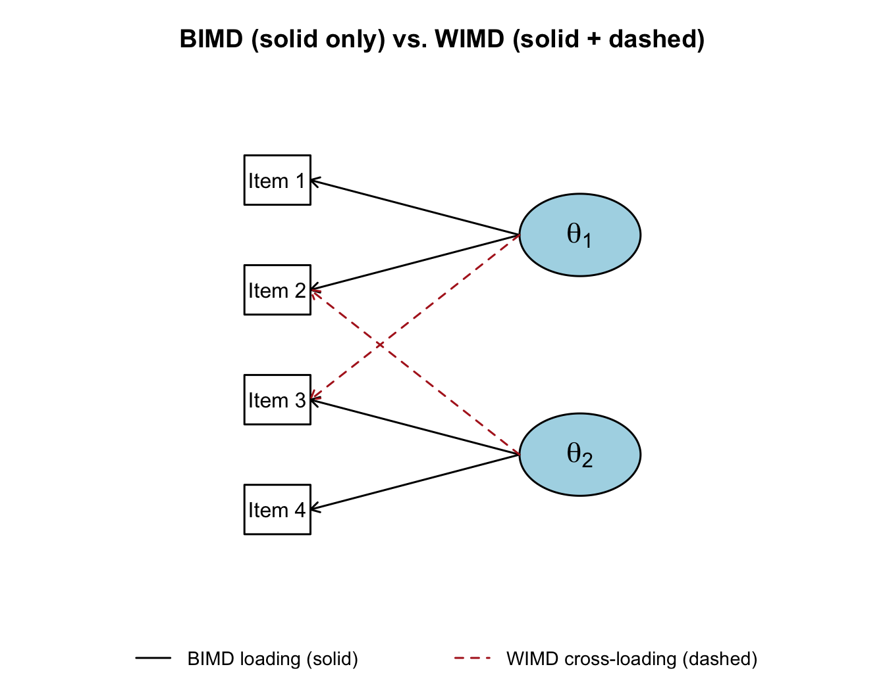
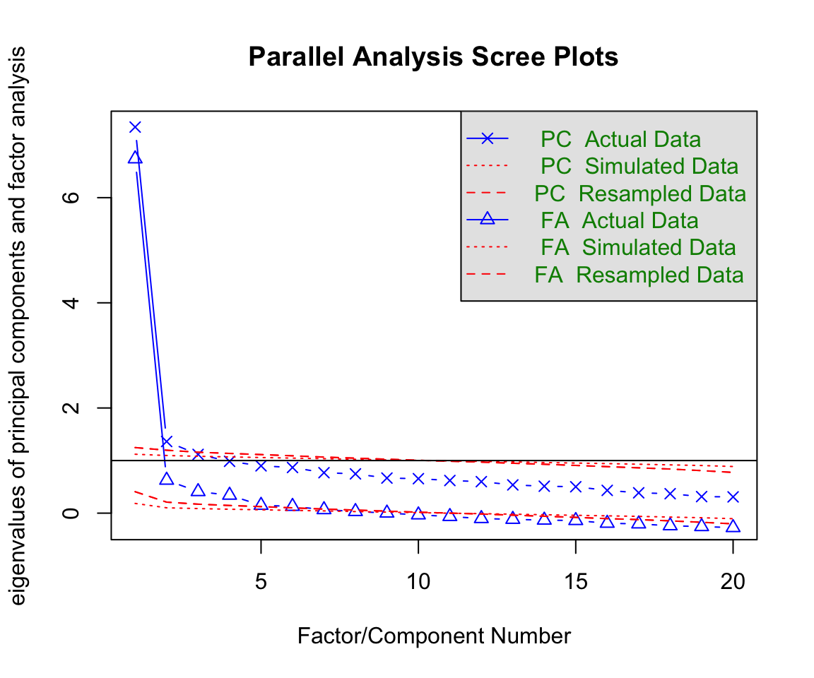
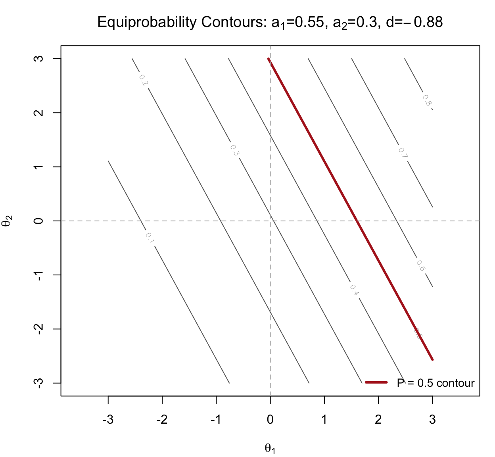
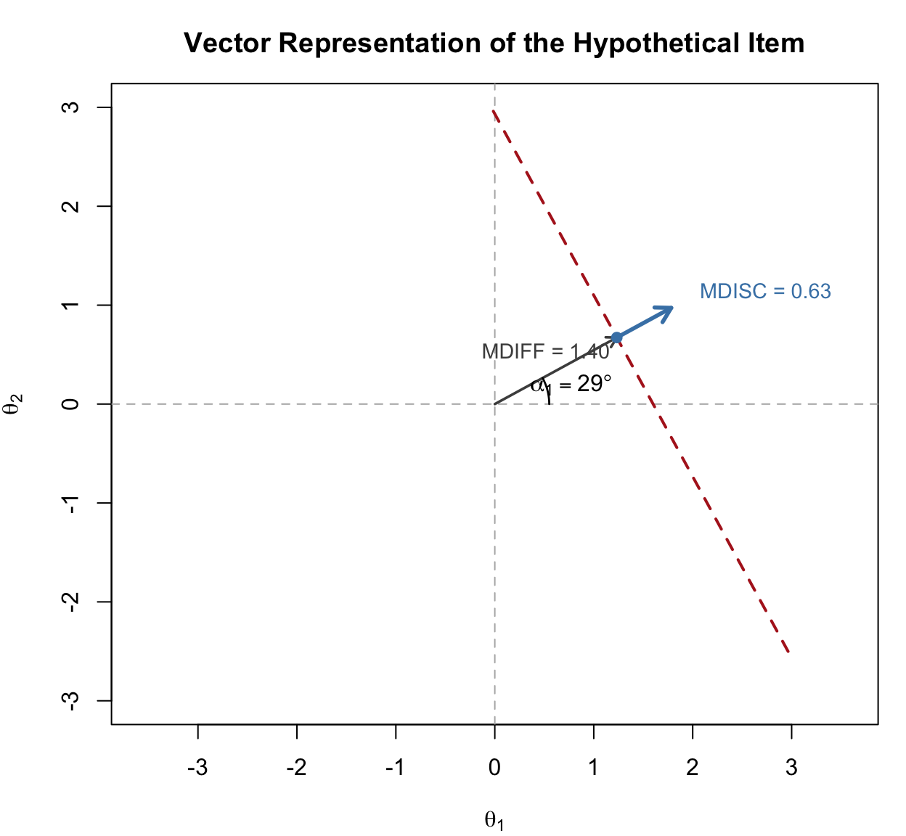
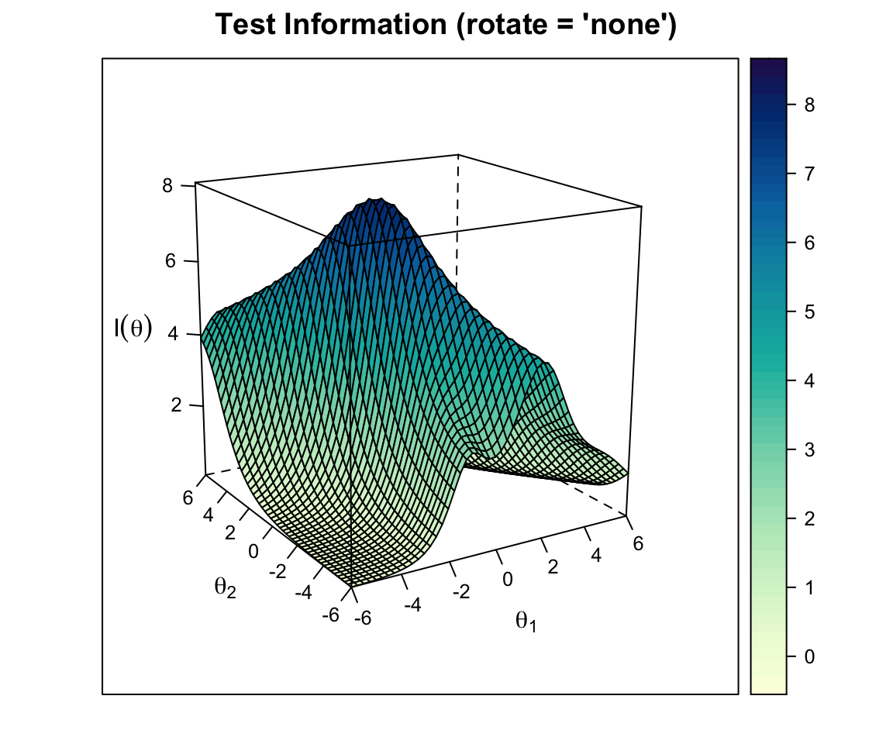
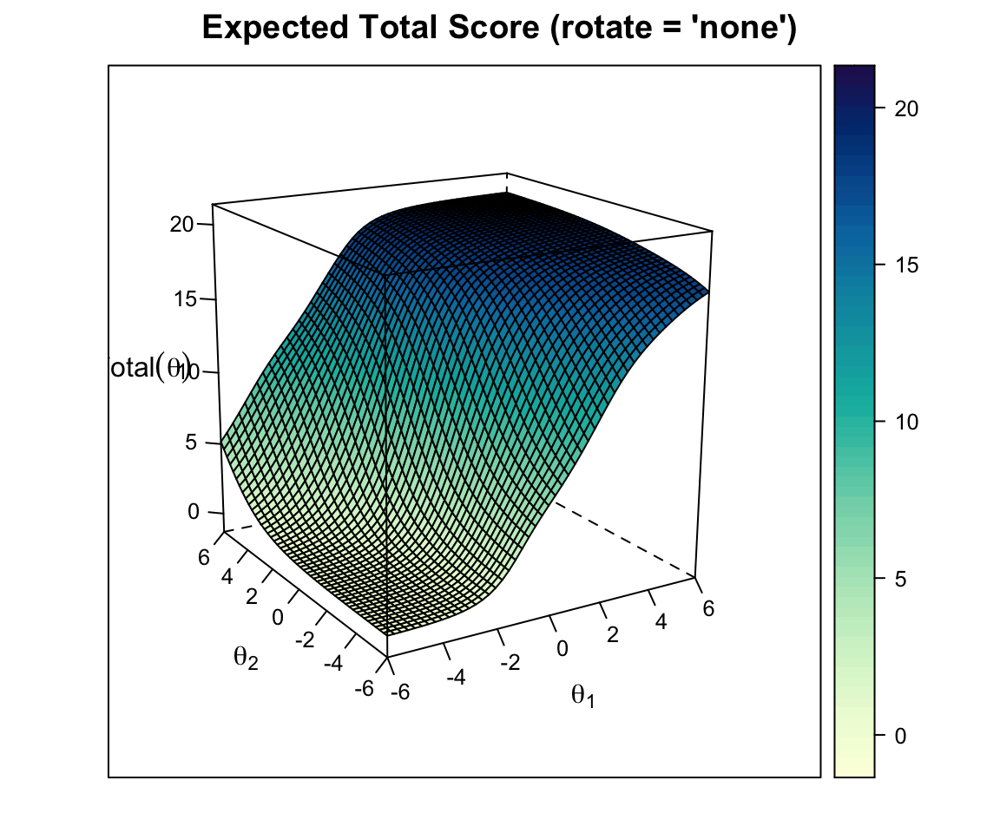
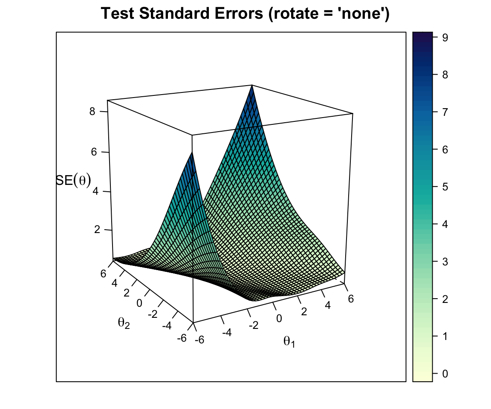
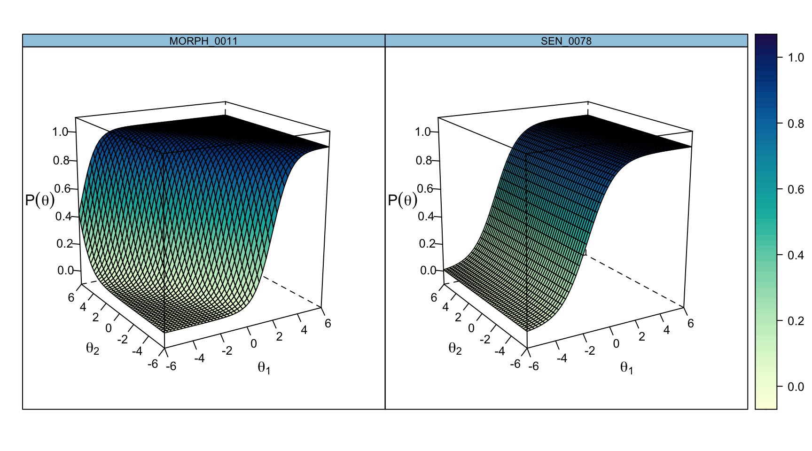
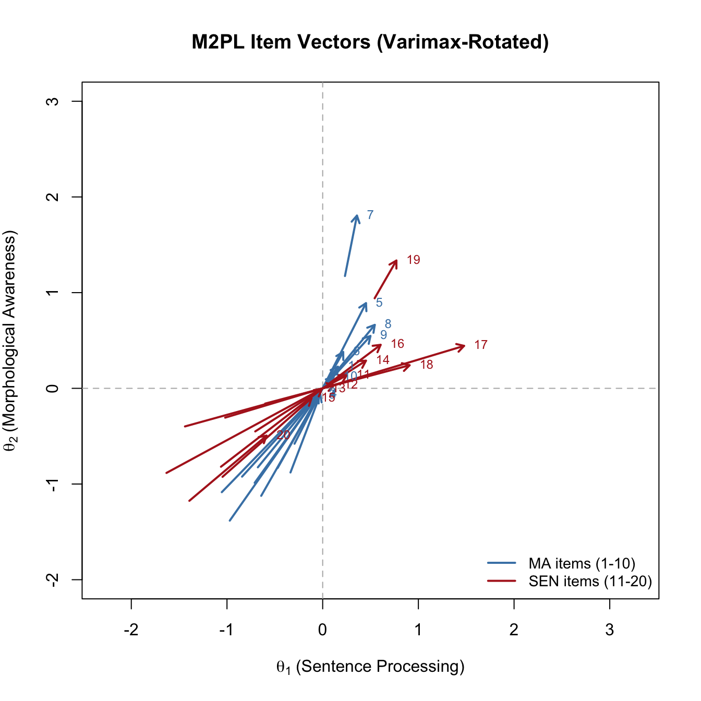
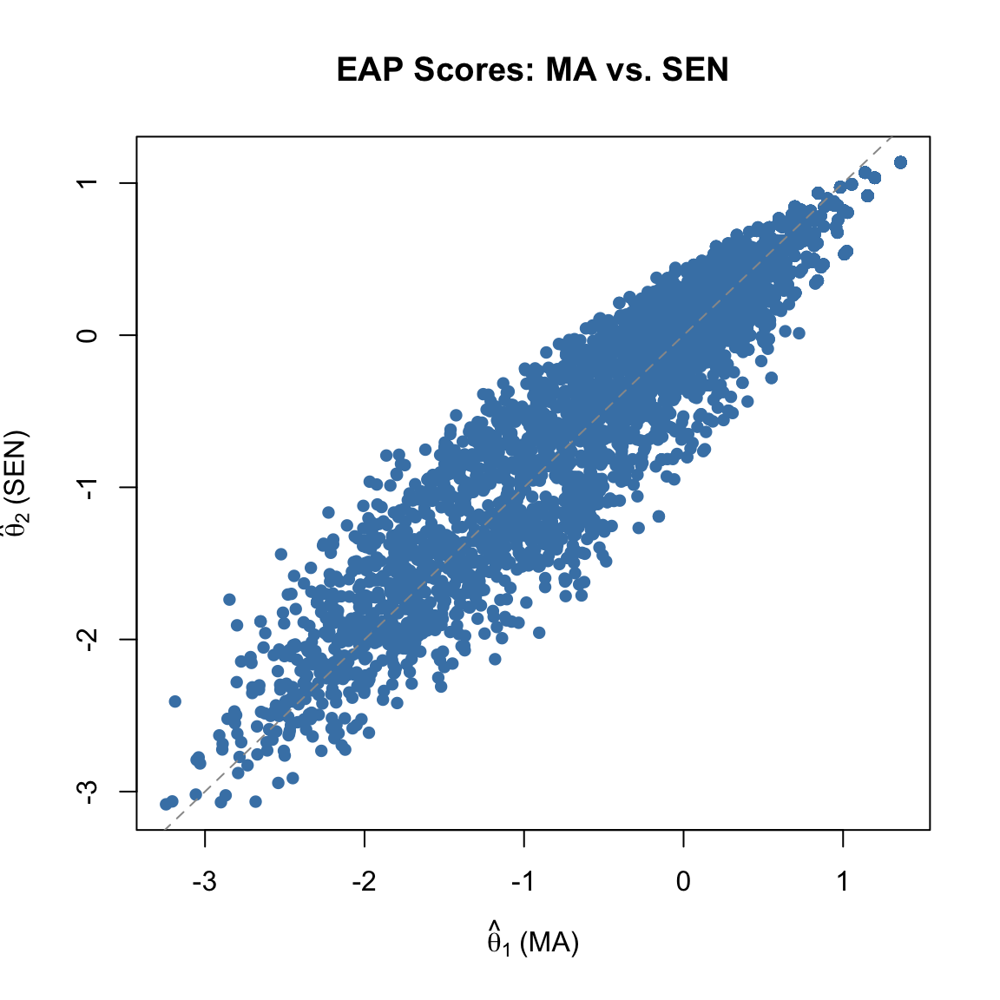

Code
library(mirt)
library(psych)
library(kableExtra)Most of what we have done so far in this course has assumed that a single latent variable, \(\theta\), is enough to account for the probabilities with which examinees respond correctly to items on a test. But for many tests, this unidimensionality assumption is a strong—and sometimes indefensible—claim. A reading test might tap vocabulary knowledge, sentence processing, and passage comprehension. A math test might mix computational fluency, conceptual reasoning, and modeling. If more than one latent construct is really driving performance, then treating the data as unidimensional can distort item parameters, person scores, and (especially) inferences about growth.
Multidimensional item response theory (MIRT) relaxes the unidimensionality assumption by letting each examinee be located in a \(D\)-dimensional latent space, \(\boldsymbol{\theta} = (\theta_1, \theta_2, \ldots, \theta_D)\). Items may measure one dimension cleanly, several dimensions jointly, or a different combination of dimensions than the items next to them on the test form. The goal of this tutorial is to make the shift from unidimensional IRT to MIRT feel like a natural extension—while being honest about a handful of tricky decision points that simulated textbook examples tend to mask.
This tutorial covers:
mirt using empirical data from Weeks (2018)Prerequisites: Familiarity with the unidimensional 2PL model, basic factor analysis concepts, and using mirt for parameter estimation. Chapters 12 of Reckase (2016) and the Weeks (2018) application paper are the two readings that pair best with this tutorial.
library(mirt)
library(psych)
library(kableExtra)Recall the unidimensional 2PL model:
\[P(u_{ij} = 1 \mid \theta_j) = \frac{\exp(a_i \theta_j + d_i)}{1 + \exp(a_i \theta_j + d_i)}\]
where \(a_i\) is the discrimination for item \(i\), \(d_i = -a_i b_i\) is the intercept (difficulty on the logit scale), and \(\theta_j\) is examinee \(j\)’s location on the latent continuum.
The compensatory M2PL generalizes this by replacing the scalar \(a_i\) and \(\theta_j\) with vectors:
\[P(u_{ij} = 1 \mid \boldsymbol{\theta}_j) = \frac{\exp(\mathbf{a}_i' \boldsymbol{\theta}_j + d_i)}{1 + \exp(\mathbf{a}_i' \boldsymbol{\theta}_j + d_i)}\]
where \(\mathbf{a}_i = (a_{i1}, a_{i2}, \ldots, a_{iD})\) is the \(D \times 1\) vector of slope (discrimination) parameters, one per dimension, and \(\boldsymbol{\theta}_j = (\theta_{j1}, \ldots, \theta_{jD})\) is the examinee’s location vector. The scalar intercept \(d_i\) still governs item difficulty.
The model is called compensatory because of the additive form of the exponent: a low value on one dimension can be offset by a high value on another dimension, producing the same probability of a correct response. In the two-dimensional case,
\[a_{i1}\theta_{j1} + a_{i2}\theta_{j2} + d_i = k\]
defines a straight line in \((\theta_1, \theta_2)\) space; every \((\theta_1, \theta_2)\) pair on that line has the same probability of a correct response. These equiprobability contours are the multidimensional analog of the point on the unidimensional \(\theta\) scale where \(P = 0.5\).
The main alternative to the compensatory model is the partially compensatory (sometimes called noncompensatory) model, first proposed by Sympson (1978). Its form for two dimensions is:
\[P(u_{ij} = 1 \mid \boldsymbol{\theta}_j) = \prod_{d=1}^{D} \frac{\exp(a_{id}(\theta_{jd} - b_{id}))}{1 + \exp(a_{id}(\theta_{jd} - b_{id}))}\]
The distinguishing feature is the product of unidimensional probabilities: the overall probability of a correct response is bounded above by the smallest of the component probabilities. If an examinee is very low on dimension 1, no amount of strength on dimension 2 can rescue the response. In a reading context, you can imagine a word-decoding item that genuinely requires both lexical and morphological skills—a student weak on either cannot succeed by compensating with the other.
Throughout this tutorial, we focus on the compensatory model, which is the workhorse of applied MIRT work and the default in mirt. Reckase (2016, Section 12.2) works through both forms in detail.
A separate question—independent of whether the model is compensatory—is which items load on which dimensions.
BIMD is effectively a collection of unidimensional tests sharing a common group of examinees. WIMD is the more general case and is what the compensatory M2PL is designed to model when fit exploratorily.
The distinction is easiest to see as a path diagram. In the figure below, rectangles are observed items, ovals are latent dimensions, and arrows are factor loadings. Reading only the solid arrows gives you a BIMD (simple-structure) model: each item loads on exactly one dimension. Reading the solid arrows plus the dashed arrows gives you a WIMD model: two items now load on both dimensions.

As Thurstone first observed in the factor-analysis tradition, BIMD is the cleaner case to interpret: each item belongs to a single latent dimension, and the test essentially partitions into subscales. WIMD is more realistic for many achievement tests, because the cognitive demands of real items rarely fall cleanly on one axis.
A third dimension of this typology is whether the analysis is exploratory (every item is eligible to load on every dimension; the data decide) or confirmatory (some loadings are fixed to zero on theoretical grounds, defining a measurement model in advance). We will fit both in this tutorial.
We use data from the Reading Inventory and Student Evaluation (RISE), a diagnostic battery of foundational reading skills analyzed in Weeks (2018). The full RISE battery has 199 unique items across four parallel forms given to students in grades 6 through 9. It was designed to measure six component skills:
Our file RISE_IR.csv contains dichotomously-scored responses from 4,493 students to all 199 items. To keep the pedagogy manageable—and to focus on two subscales with good theoretical reasons to be distinct but correlated—we work with just the first 10 morphological awareness (MA) items and the first 10 sentence processing (SEN) items. That gives us a 20-item, 4493-student dataset well-suited to a two-dimensional compensatory model.
ir <- read.csv("../Data/RISE_IR.csv")
dat <- ir[, c(89:98, 118:127)] # first 10 MA + first 10 SEN
dim(dat)[1] 4493 20colnames(dat) [1] "MORPH_0011" "MORPH_0012" "MORPH_0014" "MORPH_0015" "MORPH_0016"
[6] "MORPH_0018" "MORPH_0020" "MORPH_0022" "MORPH_0024" "MORPH_0025"
[11] "SEN_0037" "SEN_0040" "SEN_0042" "SEN_0048" "SEN_0063"
[16] "SEN_0067" "SEN_0072" "SEN_0073" "SEN_0076" "SEN_0078" itemstats(dat)$overall
N mean_total.score sd_total.score ave.r sd.r alpha SEM.alpha
4493 14.507 3.809 0.174 0.072 0.799 1.709
$itemstats
N K mean sd total.r total.r_if_rm alpha_if_rm
MORPH_0011 4493 2 0.896 0.305 0.470 0.404 0.789
MORPH_0012 4493 2 0.753 0.431 0.469 0.373 0.790
MORPH_0014 4493 2 0.773 0.419 0.459 0.366 0.790
MORPH_0015 4493 2 0.669 0.471 0.390 0.278 0.796
MORPH_0016 4493 2 0.671 0.470 0.550 0.454 0.784
MORPH_0018 4493 2 0.726 0.446 0.501 0.406 0.788
MORPH_0020 4493 2 0.331 0.470 0.295 0.177 0.802
MORPH_0022 4493 2 0.783 0.412 0.571 0.492 0.783
MORPH_0024 4493 2 0.824 0.381 0.557 0.482 0.784
MORPH_0025 4493 2 0.852 0.355 0.490 0.414 0.788
SEN_0037 4493 2 0.924 0.265 0.437 0.378 0.791
SEN_0040 4493 2 0.845 0.362 0.443 0.362 0.790
SEN_0042 4493 2 0.794 0.404 0.482 0.394 0.788
SEN_0048 4493 2 0.699 0.459 0.526 0.431 0.786
SEN_0063 4493 2 0.794 0.405 0.472 0.383 0.789
SEN_0067 4493 2 0.486 0.500 0.380 0.260 0.798
SEN_0072 4493 2 0.808 0.394 0.558 0.480 0.784
SEN_0073 4493 2 0.661 0.473 0.504 0.402 0.788
SEN_0076 4493 2 0.384 0.486 0.293 0.170 0.803
SEN_0078 4493 2 0.832 0.374 0.406 0.319 0.793
$proportions
0 1
MORPH_0011 0.104 0.896
MORPH_0012 0.247 0.753
MORPH_0014 0.227 0.773
MORPH_0015 0.331 0.669
MORPH_0016 0.329 0.671
MORPH_0018 0.274 0.726
MORPH_0020 0.669 0.331
MORPH_0022 0.217 0.783
MORPH_0024 0.176 0.824
MORPH_0025 0.148 0.852
SEN_0037 0.076 0.924
SEN_0040 0.155 0.845
SEN_0042 0.206 0.794
SEN_0048 0.301 0.699
SEN_0063 0.206 0.794
SEN_0067 0.514 0.486
SEN_0072 0.192 0.808
SEN_0073 0.339 0.661
SEN_0076 0.616 0.384
SEN_0078 0.168 0.832The \(p\)-values (mean scores, in the mean column of itemstats) span a reasonable difficulty range, and the item-total correlations look pretty good with a few notable exceptions. Now let’s look at the correlation between the two subscale total scores:
ma_tot <- apply(dat[, 1:10], 1, sum)
sen_tot <- apply(dat[, 11:20], 1, sum)
cor(ma_tot, sen_tot)[1] 0.5859381A raw-score correlation around .59 is moderate: the two subscales are clearly related but far from redundant. Keep in mind that this is an observed correlation between two short, noisy subtests, so it is attenuated by measurement error. The underlying latent correlation between the two skills will be higher—we will recover an estimate of it below when we fit the M2PL and inspect the inter-factor correlation. Either way, this is the sweet spot where a multidimensional model may add value: the subscales are reliable enough to support separate measurement, but they are not so weakly related that a single composite would be obviously misleading.
Before fitting any IRT model, it is useful to check how many dimensions the data are likely to support. A parallel analysis (Horn, 1965) compares the eigenvalues of the observed item correlation matrix to those from random data of the same size. Dimensions worth retaining are those whose observed eigenvalue exceeds the corresponding random-data eigenvalue.
fa.parallel(dat, fa = "both", cor = "poly")
Parallel analysis suggests that the number of factors = 7 and the number of components = 3 The scree plot results are interesting is that you can either read them as support for an assumption of “essential undimensionality” (since there is a hige drop from the first to second eigenvalue) or as support for retaining more than one factor (since there are multiple secondary factors that appear “statistically significant”). In this case, we have some good theoretical reasons to treat these two sets of items as reflecting different dimensions, and the empirical results don’t rule this out. So let’s proceed with the specification of a two-dimensional compensatory M2PL.
As a reference point, let’s first fit a unidimensional 2PL so that we have a baseline set of item parameters and scores to compare against.
out1 <- mirt(dat, 1, verbose = FALSE)
pars1 <- coef(out1, IRTpars = TRUE, simplify = TRUE)
theta1 <- fscores(out1)
round(pars1$items, 2) a b g u
MORPH_0011 1.86 -1.73 0 1
MORPH_0012 1.12 -1.24 0 1
MORPH_0014 1.12 -1.36 0 1
MORPH_0015 0.75 -1.05 0 1
MORPH_0016 1.43 -0.70 0 1
MORPH_0018 1.27 -1.01 0 1
MORPH_0020 0.50 1.48 0 1
MORPH_0022 1.89 -1.08 0 1
MORPH_0024 1.98 -1.25 0 1
MORPH_0025 1.68 -1.51 0 1
SEN_0037 2.05 -1.89 0 1
SEN_0040 1.34 -1.65 0 1
SEN_0042 1.34 -1.34 0 1
SEN_0048 1.34 -0.85 0 1
SEN_0063 1.25 -1.39 0 1
SEN_0067 0.66 0.09 0 1
SEN_0072 1.92 -1.19 0 1
SEN_0073 1.23 -0.71 0 1
SEN_0076 0.44 1.13 0 1
SEN_0078 1.06 -1.81 0 1Nothing here should be surprising: every item has a single positive discrimination (\(a\)) and a difficulty (\(b\)) on the logit scale.
Now let’s fit the two-dimensional compensatory model using the defaults in mirt:
out2 <- mirt(dat, 2, verbose = FALSE)
pars2 <- coef(out2, simplify = TRUE)
theta2 <- fscores(out2)
round(pars2$items, 2) a1 a2 d g u
MORPH_0011 -1.90 -0.50 3.32 0 1
MORPH_0012 -1.12 -0.28 1.40 0 1
MORPH_0014 -1.13 -0.41 1.56 0 1
MORPH_0015 -0.76 -0.42 0.82 0 1
MORPH_0016 -1.52 -0.64 1.07 0 1
MORPH_0018 -1.30 -0.48 1.33 0 1
MORPH_0020 -0.50 -0.40 -0.77 0 1
MORPH_0022 -1.89 -0.35 2.06 0 1
MORPH_0024 -1.97 -0.26 2.49 0 1
MORPH_0025 -1.67 -0.17 2.54 0 1
SEN_0037 -2.10 0.43 3.98 0 1
SEN_0040 -1.47 0.68 2.42 0 1
SEN_0042 -1.33 0.06 1.79 0 1
SEN_0048 -1.36 0.18 1.15 0 1
SEN_0063 -1.24 -0.03 1.73 0 1
SEN_0067 -0.66 0.04 -0.06 0 1
SEN_0072 -2.39 1.04 2.77 0 1
SEN_0073 -1.41 0.67 0.97 0 1
SEN_0076 -0.43 -0.15 -0.49 0 1
SEN_0078 -1.06 0.00 1.92 0 1Look carefully at the columns a1 and a2. Most items have negative slope parameters on one or both of the two dimensions. That doesn’t make a lot of intuitive sense, right? It would be tempting to throw out the model on the spot. But hold that thought—it turns out the raw parameter output from a default call to mirt is not yet in a form that admits easy substantive interpretation.
Also notice that the covariance between dimensions (COV_21) is fixed at 0 and the means and variances of the dimensions are fixed at 0 and 1. This is how mirt defines the metric for the exploratory solution: \(\boldsymbol{\theta} \sim N(\mathbf{0}, \mathbf{I})\).
Reckase (2009, 2016) argues that slope and intercept estimates are rarely the best way to describe how an MIRT item is functioning. Instead, three derived quantities do a better job of summarizing the geometry of each item’s response surface:
Multidimensional discrimination (MDISC): \(\text{MDISC}_i = \sqrt{\sum_{d=1}^{D} a_{id}^2}\). This is the length of the item’s slope vector. It plays the role of \(a\) in the unidimensional 2PL: a higher value means the response surface is steeper at its steepest point.
Multidimensional difficulty (MDIFF or \(D\)): \(D_i = -d_i / \text{MDISC}_i\). This is the (signed) distance from the origin of the latent space to the item’s 0.5 equiprobability contour, measured along the direction of steepest slope. Larger positive values correspond to harder items; negative values to easier ones.
Directional angles (\(\alpha_d\)): \(\alpha_{id} = \arccos(a_{id} / \text{MDISC}_i)\), converted to degrees. The angle between the item’s direction of best measurement and each coordinate axis. An item with \(\alpha_1 = \alpha_2 = 45^\circ\) measures both dimensions equally well. An item with \(\alpha_1 = 10^\circ, \alpha_2 = 80^\circ\) is nearly pure \(\theta_1\).
Before we apply these definitions to all 20 items of the M2PL fit, let’s build intuition with a single hypothetical item. Consider an item with \(a_1 = 0.55\), \(a_2 = 0.30\), and \(d = -0.88\). Let’s use these parameters to compute MDISC, MDIFF, and Direction and see how these can be interpreted visually.
a1_hyp <- 0.55
a2_hyp <- 0.30
d_hyp <- -0.88
mdisc_hyp <- sqrt(a1_hyp^2 + a2_hyp^2)
D_hyp <- -d_hyp / mdisc_hyp
alpha1_hyp <- acos(a1_hyp / mdisc_hyp) * 180 / pi
alpha2_hyp <- acos(a2_hyp / mdisc_hyp) * 180 / pi
cat(sprintf("MDISC = %.2f\nMDIFF = %.2f\nalpha_1 = %.0f degrees\nalpha_2 = %.0f degrees\n",
mdisc_hyp, D_hyp, alpha1_hyp, alpha2_hyp))MDISC = 0.63
MDIFF = 1.40
alpha_1 = 29 degrees
alpha_2 = 61 degreesSo this is a moderately discriminating, above-average-difficulty item whose direction of best measurement leans toward \(\theta_1\) (only \(29^\circ\) off the \(\theta_1\) axis).
We can see where the item “lives” in the latent space by plotting its equiprobability contours—the locus of \((\theta_1, \theta_2)\) pairs that produce each probability of a correct response. For the compensatory M2PL, these are straight lines.

Two features of this plot tell the MIRT story in a single image:
The three summary quantities—MDISC, MDIFF, and the directional angles—can be read off a single vector drawn on the latent space. The construction is worth walking through slowly, because once you understand it, MIRT item parameters will make more sense.

Here is how to read the figure:
Every compensatory M2PL item can be summarized this way: one vector in latent space, carrying everything you need to know about where the item is (MDIFF), how sharply it discriminates (MDISC), and what mixture of latent dimensions it is really measuring (the angles). Vector plots of many items at once are how practitioners visualize whether a test is measuring a consistent composite or a sprawling mixture of constructs (we will see a vector plot of all 20 RISE items in Section 6).
With that intuition in place, let’s compute these quantities for the default (unrotated) M2PL solution and see whether they recover anything interpretable:
mdisc <- sqrt(pars2$items[, "a1"]^2 + pars2$items[, "a2"]^2)
D_val <- ifelse(pars2$items[, "d"] == 0, 0, -pars2$items[, "d"] / mdisc)
alpha1 <- acos(pars2$items[, "a1"] / mdisc) * 180 / pi
alpha2 <- acos(pars2$items[, "a2"] / mdisc) * 180 / pi
unrot <- cbind(mdisc, D = D_val, alpha1, alpha2)
round(unrot, 2) mdisc D alpha1 alpha2
MORPH_0011 1.97 -1.69 165.23 104.77
MORPH_0012 1.15 -1.22 165.89 104.11
MORPH_0014 1.21 -1.29 159.92 110.08
MORPH_0015 0.87 -0.94 151.10 118.90
MORPH_0016 1.65 -0.65 157.10 112.90
MORPH_0018 1.39 -0.96 159.62 110.38
MORPH_0020 0.64 1.20 141.37 128.63
MORPH_0022 1.93 -1.07 169.53 100.47
MORPH_0024 1.99 -1.25 172.54 97.46
MORPH_0025 1.68 -1.51 174.32 95.68
SEN_0037 2.14 -1.86 168.29 78.29
SEN_0040 1.62 -1.49 155.32 65.32
SEN_0042 1.33 -1.34 177.47 87.47
SEN_0048 1.37 -0.84 172.42 82.42
SEN_0063 1.24 -1.40 178.68 91.32
SEN_0067 0.67 0.09 176.75 86.75
SEN_0072 2.61 -1.06 156.57 66.57
SEN_0073 1.56 -0.62 154.72 64.72
SEN_0076 0.45 1.09 160.14 109.86
SEN_0078 1.06 -1.82 180.00 90.00Here is the diagnosis. MDISC and D look sensible—their magnitudes and signs are in a reasonable range. But the directional angles are all over the place, with many items measuring in the second or fourth quadrant of the \((\theta_1, \theta_2)\) plane. If both dimensions genuinely reflect reading-related skills, we expect item vectors to land in the first quadrant (positive on both axes), not to point toward negative values on either dimension. The angles are symptomatic of the same problem as the negative slopes: the exploratory solution is not unique.
In a unidimensional IRT model, the scale is pinned down by fixing \(\theta \sim N(0, 1)\). That is enough to identify both the slope and the intercept of every item up to a reflection (we also require \(a > 0\)).
In MIRT, we still fix \(\boldsymbol{\theta} \sim N(\mathbf{0}, \mathbf{I})\)—but that is no longer sufficient. Any orthogonal rotation of the latent space preserves the mean zero, variance one, and zero covariance of the \(\boldsymbol{\theta}\) vector, so all such rotations give identical model-implied probabilities. The solution we happen to get out of the estimator is one arbitrary rotation, chosen for algorithmic convenience rather than substantive interpretability.
This is the exact same non-identifiability that factor analysts have grappled with for a century. The standard response is to rotate the solution into a form that is easier to interpret. The compensatory M2PL is, in fact, very close to an exploratory factor analysis on the item-response data, so the same rotation options apply.
The simplest rotation is orthogonal: we rotate the coordinate axes of the latent space while keeping them at right angles to each other. This preserves the assumption that the dimensions are uncorrelated. Varimax is the most common orthogonal criterion; it rotates toward a solution where each item loads strongly on one dimension and near zero on the others.
pars2v <- coef(out2, simplify = TRUE, rotate = "varimax")
Rotation: varimax compare <- cbind(pars2$items[, c("a1", "a2", "d")],
pars2v$items[, c("a1", "a2", "d")])
colnames(compare) <- c("a1_unrot", "a2_unrot", "d_unrot",
"a1_vmx", "a2_vmx", "d_vmx")
round(compare, 2) a1_unrot a2_unrot d_unrot a1_vmx a2_vmx d_vmx
MORPH_0011 -1.90 -0.50 3.32 1.13 1.61 3.32
MORPH_0012 -1.12 -0.28 1.40 0.67 0.94 1.40
MORPH_0014 -1.13 -0.41 1.56 0.60 1.05 1.56
MORPH_0015 -0.76 -0.42 0.82 0.31 0.82 0.82
MORPH_0016 -1.52 -0.64 1.07 0.75 1.47 1.07
MORPH_0018 -1.30 -0.48 1.33 0.68 1.21 1.33
MORPH_0020 -0.50 -0.40 -0.77 0.13 0.63 -0.77
MORPH_0022 -1.89 -0.35 2.06 1.22 1.49 2.06
MORPH_0024 -1.97 -0.26 2.49 1.34 1.47 2.49
MORPH_0025 -1.67 -0.17 2.54 1.17 1.20 2.54
SEN_0037 -2.10 0.43 3.98 1.88 1.02 3.98
SEN_0040 -1.47 0.68 2.42 1.56 0.43 2.42
SEN_0042 -1.33 0.06 1.79 1.05 0.81 1.79
SEN_0048 -1.36 0.18 1.15 1.16 0.74 1.15
SEN_0063 -1.24 -0.03 1.73 0.93 0.82 1.73
SEN_0067 -0.66 0.04 -0.06 0.53 0.40 -0.06
SEN_0072 -2.39 1.04 2.77 2.50 0.75 2.77
SEN_0073 -1.41 0.67 0.97 1.51 0.40 0.97
SEN_0076 -0.43 -0.15 -0.49 0.23 0.39 -0.49
SEN_0078 -1.06 0.00 1.92 0.81 0.68 1.92Notice two things. First, the varimax-rotated slopes (a1_vmx, a2_vmx) are all positive: the rotation has resolved the negative-slope problem entirely. Second, the intercepts d are unchanged by orthogonal rotation, as they should be—rotation moves the axes, not the items’ difficulty in the space.
Now the MDISC / MDIFF / directional angle summary becomes interpretable:
mdisc <- sqrt(pars2v$items[, "a1"]^2 + pars2v$items[, "a2"]^2)
D_val <- ifelse(pars2v$items[, "d"] == 0, 0, -pars2v$items[, "d"] / mdisc)
alpha1 <- acos(pars2v$items[, "a1"] / mdisc) * 180 / pi
alpha2 <- acos(pars2v$items[, "a2"] / mdisc) * 180 / pi
vmx_summary <- data.frame(
Item = rownames(pars2v$items),
MDISC = round(mdisc, 2),
MDIFF = round(D_val, 2),
alpha1 = round(alpha1, 1),
alpha2 = round(alpha2, 1)
)
vmx_summary |>
kable("html", col.names = c("Item", "MDISC", "MDIFF (D)",
"Angle θ₁ (°)", "Angle θ₂ (°)")) |>
kable_styling(full_width = FALSE)| Item | MDISC | MDIFF (D) | Angle θ₁ (°) | Angle θ₂ (°) | |
|---|---|---|---|---|---|
| MORPH_0011 | MORPH_0011 | 1.97 | -1.69 | 54.9 | 35.1 |
| MORPH_0012 | MORPH_0012 | 1.15 | -1.22 | 54.3 | 35.7 |
| MORPH_0014 | MORPH_0014 | 1.21 | -1.29 | 60.2 | 29.8 |
| MORPH_0015 | MORPH_0015 | 0.87 | -0.94 | 69.1 | 20.9 |
| MORPH_0016 | MORPH_0016 | 1.65 | -0.65 | 63.0 | 27.0 |
| MORPH_0018 | MORPH_0018 | 1.39 | -0.96 | 60.5 | 29.5 |
| MORPH_0020 | MORPH_0020 | 0.64 | 1.20 | 78.8 | 11.2 |
| MORPH_0022 | MORPH_0022 | 1.93 | -1.07 | 50.6 | 39.4 |
| MORPH_0024 | MORPH_0024 | 1.99 | -1.25 | 47.6 | 42.4 |
| MORPH_0025 | MORPH_0025 | 1.68 | -1.51 | 45.8 | 44.2 |
| SEN_0037 | SEN_0037 | 2.14 | -1.86 | 28.4 | 61.6 |
| SEN_0040 | SEN_0040 | 1.62 | -1.49 | 15.5 | 74.5 |
| SEN_0042 | SEN_0042 | 1.33 | -1.34 | 37.6 | 52.4 |
| SEN_0048 | SEN_0048 | 1.37 | -0.84 | 32.6 | 57.4 |
| SEN_0063 | SEN_0063 | 1.24 | -1.40 | 41.5 | 48.5 |
| SEN_0067 | SEN_0067 | 0.67 | 0.09 | 36.9 | 53.1 |
| SEN_0072 | SEN_0072 | 2.61 | -1.06 | 16.7 | 73.3 |
| SEN_0073 | SEN_0073 | 1.56 | -0.62 | 14.9 | 75.1 |
| SEN_0076 | SEN_0076 | 0.45 | 1.09 | 60.0 | 30.0 |
| SEN_0078 | SEN_0078 | 1.06 | -1.82 | 40.1 | 49.9 |
Every angle now lies in \((0^\circ, 90^\circ)\)—the first quadrant—and the MA items have angles closer to \(\theta_1\) while the SEN items have angles closer to \(\theta_2\). The rotated solution is telling the expected story. But notice that, interestingly, there are a number of items that seems to “load” equally on each dimension, even though they were written to be associated with either MA or SEN.
Jon Weeks (in personal communication with Derek) has suggested an alternative workflow that side-steps the rotation step for plotting purposes: constrain all slope parameters to have a lower bound of zero during estimation. This is defensible whenever there is good theoretical reason to think the item response surface should be monotonically increasing in every dimension—which for achievement items is usually the case.
# Pull the default parameter table so we can edit it
constraints <- mirt(dat, 2, pars = "values")
# Set lower bound on a1 and a2 to 0
constraints$lbound[constraints$name %in% c("a1", "a2")] <- 0
# The default starting values for a1 are negative (an algorithmic convention),
# which would sit below the new lower bound and cause the optimizer to pin
# them at 0. Reset the starting values for all freely estimated slopes to
# their absolute values so the optimizer starts inside the feasible region.
is_free_slope <- constraints$name %in% c("a1", "a2") & constraints$est
constraints$value[is_free_slope] <- abs(constraints$value[is_free_slope])
out2c <- mirt(dat, 2, pars = constraints, verbose = FALSE)
pars2c <- coef(out2c, simplify = TRUE, rotate = "varimax")
Rotation: varimax compare <- cbind(pars2v$items[, c("a1", "a2", "d")],
pars2c$items[, c("a1", "a2", "d")])
colnames(compare) <- c("a1_vmx", "a2_vmx", "d_vmx",
"a1_cvmx", "a2_cvmx", "d_cvmx")
round(compare, 2) a1_vmx a2_vmx d_vmx a1_cvmx a2_cvmx d_cvmx
MORPH_0011 1.13 1.61 3.32 1.23 1.47 3.27
MORPH_0012 0.67 0.94 1.40 0.71 0.90 1.40
MORPH_0014 0.60 1.05 1.56 0.66 0.99 1.55
MORPH_0015 0.31 0.82 0.82 0.33 0.82 0.82
MORPH_0016 0.75 1.47 1.07 0.77 1.50 1.08
MORPH_0018 0.68 1.21 1.33 0.70 1.23 1.34
MORPH_0020 0.13 0.63 -0.77 0.12 0.65 -0.77
MORPH_0022 1.22 1.49 2.06 1.26 1.47 2.06
MORPH_0024 1.34 1.47 2.49 1.37 1.48 2.50
MORPH_0025 1.17 1.20 2.54 1.20 1.18 2.54
SEN_0037 1.88 1.02 3.98 2.10 0.84 4.11
SEN_0040 1.56 0.43 2.42 1.49 0.48 2.38
SEN_0042 1.05 0.81 1.79 1.08 0.78 1.79
SEN_0048 1.16 0.74 1.15 1.17 0.72 1.15
SEN_0063 0.93 0.82 1.73 0.99 0.75 1.73
SEN_0067 0.53 0.40 -0.06 0.54 0.39 -0.06
SEN_0072 2.50 0.75 2.77 2.30 0.74 2.63
SEN_0073 1.51 0.40 0.97 1.39 0.45 0.94
SEN_0076 0.23 0.39 -0.49 0.25 0.37 -0.49
SEN_0078 0.81 0.68 1.92 1.03 0.33 1.94When combined with varimax rotation, the non-negativity constraint gives essentially the same answer as plain varimax rotation on the unconstrained fit. The practical reason to reach for the constrained fit is that it makes downstream plotting more intuitive: the mirt plot methods work directly off the fitted object, so having slopes that are already non-negative yields cleaner item-response surfaces without needing to re-rotate.
One technical caveat is worth flagging: by default mirt initializes the exploratory a-parameters at negative starting values (about \(-0.4\) in our case). If we simply add lbound = 0 without also resetting those starting values, the optimizer begins outside the feasible region for every \(a_1\), and the usual behavior is that those parameters end up pinned at \(0\). That collapses the solution toward a single dimension—a silent estimation failure. Resetting starts to abs(value), as we did above, is a simple and reliable way to avoid this.
The mirt plot methods provide useful multidimensional analogs of the information, score, SE, and trace plots we have been using all semester. They work on the constrained fit because the surfaces are already in the right orientation.
plot(out2c, type = "info")
The test information surface shows where in the \((\theta_1, \theta_2)\) space the test provides the most information about examinee location. With 20 items covering both dimensions, the surface peaks near the origin and falls off toward the corners of the space.
plot(out2c, type = "score")
The test score surface is the expected number-correct score as a function of \((\theta_1, \theta_2)\). It is a smooth, monotonically increasing surface—the multidimensional analog of the test characteristic curve.
plot(out2c, type = "SE")
The SE surface is essentially the reciprocal of the square root of information. It is lowest where the test provides the most information.
plot(out2c, type = "trace", which.items = c(1, 20))
These are the individual item response surfaces. Item 1 (an MA item) rises more steeply along \(\theta_2\), and item 20 (an SEN item) rises more steeply along \(\theta_1\)—mirroring the axis orientation produced by varimax rotation on this run (discussed just below in the vector plot). The contours of these surfaces—straight lines in the compensatory model—are what give MIRT its distinctive geometric flavor.
Following Reckase (2009), we can also represent each item as a vector in the \((\theta_1, \theta_2)\) plane: the vector points in the direction of steepest slope and has length proportional to MDISC. The base of the vector sits on the 0.5 equiprobability contour, at distance MDIFF from the origin.
a1 <- pars2v$items[, "a1"]
a2 <- pars2v$items[, "a2"]
d <- pars2v$items[, "d"]
mdisc <- sqrt(a1^2 + a2^2)
D_val <- -d / mdisc
# Unit vector in the direction of best measurement
u1 <- a1 / mdisc
u2 <- a2 / mdisc
# Base of arrow on the 0.5 contour at distance D_val from origin
x0 <- D_val * u1
y0 <- D_val * u2
# Tip of arrow: scale by MDISC (makes high-discrimination items longer)
x1 <- x0 + mdisc * u1
y1 <- y0 + mdisc * u2
item_cols <- c(rep("steelblue", 10), rep("firebrick", 10))
plot(NULL, xlim = c(-2, 3), ylim = c(-2, 3),
xlab = expression(theta[1] ~ "(Sentence Processing)"),
ylab = expression(theta[2] ~ "(Morphological Awareness)"),
main = "M2PL Item Vectors (Varimax-Rotated)",
asp = 1)
abline(h = 0, v = 0, lty = 2, col = "gray70")
arrows(x0, y0, x1, y1, length = 0.08, lwd = 2, col = item_cols)
text(x1, y1, labels = 1:20, pos = 4, cex = 0.75, col = item_cols)
legend("bottomright", c("MA items (1-10)", "SEN items (11-20)"),
lwd = 2, col = c("steelblue", "firebrick"), cex = 0.9, bty = "n")
The SEN items (red) point closer to the \(\theta_1\) axis; the MA items (blue) point closer to the \(\theta_2\) axis. The length of each arrow reflects MDISC: longer arrows are more discriminating.
A trap worth warning you about. It is tempting to assume that \(\theta_1\) is automatically “the first dimension I thought of” (here, MA) and \(\theta_2\) is “the second one” (SEN). That assumption is wrong, and it can come back to haunt you during interpretations. Nothing in
mirt(or in exploratory factor analysis more broadly) tells the optimizer which rotated factor should be called first. Varimax rotates to maximize the variance of squared loadings within each column; it does not choose an ordering, and it does not know the names of your subscales. In this run, it happens to orient \(\theta_1\) along the SEN cluster and \(\theta_2\) along the MA cluster. A slightly different starting point, a different seed, or even a different version ofmirtcould flip the ordering (and sometimes the sign) of either axis. The correct habit is to inspect the rotated slope matrix first—identify which rotated factor each substantive cluster of items loads on—and only then assign axis labels for the plot. If you hard-code the axis labels without checking, you can produce a figure that looks like it cleanly separates two constructs but labels them backwards.
A practical question follows from these vector plots: when is treating the test as unidimensional defensible even if the underlying data are technically multidimensional? Wang and Reckase have argued that a test can be treated as essentially unidimensional—or at least consistently multidimensional—as long as no item vector lies more than about \(21.8^\circ\) off the reference composite direction. This is sometimes called the validity sector: a cone around the dominant direction of measurement within which items are “close enough” to a single composite. If items stray outside this sector, averaging them into a single total score risks distorting what the score means. This is one of the criteria by which Weeks evaluates the RISE subtests.
Varimax assumes that the rotated dimensions remain orthogonal. For reading skills, that is probably too strong: morphological awareness and sentence processing are almost certainly correlated in the population. An oblique rotation lets the rotated axes be non-orthogonal, producing both a loading matrix and an estimate of the correlation between the (rotated) factors.
The most common oblique rotation is oblimin. It is, incidentally, what mirt uses by default when you ask for a factor-analytic summary() of an exploratory model.
pars2o <- coef(out2, simplify = TRUE, rotate = "oblimin")
Rotation: oblimin mdisc_o <- sqrt(pars2o$items[, "a1"]^2 + pars2o$items[, "a2"]^2)
D_o <- ifelse(pars2o$items[, "d"] == 0, 0, -pars2o$items[, "d"] / mdisc_o)
alpha1_o <- acos(pars2o$items[, "a1"] / mdisc_o) * 180 / pi
alpha2_o <- acos(pars2o$items[, "a2"] / mdisc_o) * 180 / pi
ob_summary <- data.frame(
Item = rownames(pars2o$items),
MDISC = round(mdisc_o, 2),
MDIFF = round(D_o, 2),
alpha1 = round(alpha1_o, 1),
alpha2 = round(alpha2_o, 1)
)
rownames(ob_summary) <- NULL
ob_summary |>
kable("html", row.names = FALSE,
col.names = c("Item", "MDISC", "MDIFF (D)",
"Angle θ₁ (°)", "Angle θ₂ (°)")) |>
kable_styling(full_width = FALSE)| Item | MDISC | MDIFF (D) | Angle θ₁ (°) | Angle θ₂ (°) |
|---|---|---|---|---|
| MORPH_0011 | 1.85 | -1.79 | 4.9 | 85.1 |
| MORPH_0012 | 1.07 | -1.31 | 6.0 | 84.0 |
| MORPH_0014 | 1.26 | -1.24 | 3.3 | 93.3 |
| MORPH_0015 | 1.08 | -0.76 | 13.6 | 103.6 |
| MORPH_0016 | 1.82 | -0.59 | 6.9 | 96.9 |
| MORPH_0018 | 1.46 | -0.91 | 3.7 | 93.7 |
| MORPH_0020 | 0.92 | 0.83 | 21.8 | 111.8 |
| MORPH_0022 | 1.67 | -1.23 | 12.8 | 77.2 |
| MORPH_0024 | 1.65 | -1.51 | 19.1 | 70.9 |
| MORPH_0025 | 1.35 | -1.88 | 23.1 | 66.9 |
| SEN_0037 | 1.73 | -2.30 | 66.9 | 23.1 |
| SEN_0040 | 1.64 | -1.47 | 91.2 | 1.2 |
| SEN_0042 | 1.01 | -1.77 | 43.7 | 46.3 |
| SEN_0048 | 1.06 | -1.09 | 56.8 | 33.2 |
| SEN_0063 | 0.95 | -1.82 | 33.7 | 56.3 |
| SEN_0067 | 0.50 | 0.12 | 45.6 | 44.4 |
| SEN_0072 | 2.58 | -1.07 | 89.3 | 0.7 |
| SEN_0073 | 1.61 | -0.61 | 92.1 | 2.1 |
| SEN_0076 | 0.47 | 1.04 | 3.0 | 93.0 |
| SEN_0078 | 0.80 | -2.39 | 37.1 | 52.9 |
Under oblique rotation the directional angles are a less clean summary of what the item is doing, because the axes are no longer at right angles. Reckase’s geometric interpretation was built on the orthogonal case. So in applied work the convention is: use varimax (or the non-negativity constraint plus varimax) when you want to interpret MDISC, MDIFF, and angles a la Reckase; use oblimin when you want a factor-loading summary with an estimated inter-factor correlation.
summary(out2, suppress = 0.25)
Rotation: oblimin
Rotated factor loadings:
F1 F2 h2
MORPH_0011 0.710 0.5715
MORPH_0012 0.519 0.3149
MORPH_0014 0.604 0.3351
MORPH_0015 0.547 0.2083
MORPH_0016 0.762 0.4838
MORPH_0018 0.664 0.4008
MORPH_0020 0.472 0.1250
MORPH_0022 0.636 0.5614
MORPH_0024 0.594 0.5775
MORPH_0025 0.520 0.4923
SEN_0037 0.580 0.6128
SEN_0040 0.700 0.4747
SEN_0042 0.337 0.322 0.3794
SEN_0048 0.265 0.405 0.3942
SEN_0063 0.377 0.251 0.3470
SEN_0067 0.1325
SEN_0072 0.830 0.7011
SEN_0073 0.695 0.4572
SEN_0076 0.268 0.0667
SEN_0078 0.321 0.2777
Rotated SS loadings: 4.31 2.61
Factor correlations:
F1 F2
F1 1.000
F2 0.747 1The summary() output gives loadings as standardized factor loadings (suppressing any below 0.25 for readability), plus an estimated correlation between the two factors. The first 10 (MA) items should load primarily on F1, the second 10 (SEN) items on F2.
The inter-factor correlation (reported under “Factor correlations”) here is around .75. Recall that the raw subscale total-score correlation was .59; the factor correlation is noticeably higher because it is a correlation between the latent dimensions rather than between observed total scores, so it is not attenuated by the measurement error in the short 10-item MA and SEN subscales. This is exactly the disattenuation we expected when we saw the raw correlation earlier.
But the correlation between the two EAP theta estimates tells yet a third story:
round(cor(theta2), 3) F1 F2
F1 1.000 0.956
F2 0.956 1.000plot(theta2[, 1], theta2[, 2], pch = 16, col = "steelblue",
xlab = expression(hat(theta)[1] ~ "(MA)"),
ylab = expression(hat(theta)[2] ~ "(SEN)"),
main = "EAP Scores: MA vs. SEN")
abline(a = 0, b = 1, lty = 2, col = "gray60")
The EAP correlation is substantially higher than the factor correlation—not a small gap. Part of this is structural: EAP point estimates are posterior means, and for each person the posterior over \((\theta_1, \theta_2)\) is shaped by the full item-response pattern. When two dimensions measure related constructs and each subscale has only a handful of items, the posterior means for the two dimensions end up moving together—each one is being pulled by information from items that technically load on the other. The factor correlation, by contrast, is a structural parameter estimated jointly with the loadings via marginal maximum likelihood, and it recovers the latent correlation directly rather than through point estimates. When reporting the correlation between the underlying dimensions, the factor correlation is the cleaner quantity. When reporting how similarly two EAP subscore columns rank students, the EAP correlation is what you want—but it is not an estimate of the latent correlation.
So far we have let every item load on every dimension—an exploratory model—and then rotated the solution into interpretability. But we have strong theoretical reason to expect that the MA items measure \(\theta_1\) only and the SEN items measure \(\theta_2\) only. We can impose this structure directly by fitting a confirmatory M2PL with simple structure: the “off-diagonal” slopes are fixed to zero, and the covariance between factors is freely estimated.
This approach matches the SS2 model in Weeks (2018)—a two-factor simple-structure model—and it maps neatly onto the BIMD distinction we drew earlier.
# Build up the constraints object from scratch
cfa_pars <- mirt(dat, 2, pars = "values")
# MA items (first 10): load on θ1 only, so a2 = 0 and not estimated
cfa_pars$value[cfa_pars$name == "a2" & cfa_pars$item %in% colnames(dat)[1:10]] <- 0
cfa_pars$est[ cfa_pars$name == "a2" & cfa_pars$item %in% colnames(dat)[1:10]] <- FALSE
# SEN items (last 10): load on θ2 only, so a1 = 0 and not estimated
cfa_pars$value[cfa_pars$name == "a1" & cfa_pars$item %in% colnames(dat)[11:20]] <- 0
cfa_pars$est[ cfa_pars$name == "a1" & cfa_pars$item %in% colnames(dat)[11:20]] <- FALSE
# Free the inter-factor covariance
cfa_pars$est[cfa_pars$name == "COV_21"] <- TRUE
# Give the remaining slopes a sensible starting value
cfa_pars$value[cfa_pars$name %in% c("a1", "a2") & cfa_pars$value != 0] <- 0.5
out3 <- mirt(dat, 2, pars = cfa_pars, verbose = FALSE)
pars3 <- coef(out3, simplify = TRUE)
round(pars3$items, 2) a1 a2 d g u
MORPH_0011 1.91 0.00 3.27 0 1
MORPH_0012 1.15 0.00 1.40 0 1
MORPH_0014 1.16 0.00 1.54 0 1
MORPH_0015 0.79 0.00 0.80 0 1
MORPH_0016 1.53 0.00 1.03 0 1
MORPH_0018 1.37 0.00 1.32 0 1
MORPH_0020 0.53 0.00 -0.75 0 1
MORPH_0022 2.02 0.00 2.12 0 1
MORPH_0024 2.12 0.00 2.58 0 1
MORPH_0025 1.76 0.00 2.60 0 1
SEN_0037 0.00 2.18 4.01 0 1
SEN_0040 0.00 1.48 2.32 0 1
SEN_0042 0.00 1.40 1.82 0 1
SEN_0048 0.00 1.44 1.17 0 1
SEN_0063 0.00 1.29 1.76 0 1
SEN_0067 0.00 0.70 -0.06 0 1
SEN_0072 0.00 2.26 2.52 0 1
SEN_0073 0.00 1.40 0.93 0 1
SEN_0076 0.00 0.44 -0.49 0 1
SEN_0078 0.00 0.00 1.60 0 1In this parameterization every MA item has \(a_2 = 0\) (by fiat) and every SEN item has \(a_1 = 0\)—the simple structure is built in. What gets estimated freely is the size of the non-zero slope for each item plus the covariance between the two factors.
summary(out3) F1 F2 h2
MORPH_0011 0.746 0.5569
MORPH_0012 0.559 0.3120
MORPH_0014 0.564 0.3185
MORPH_0015 0.422 0.1781
MORPH_0016 0.669 0.4476
MORPH_0018 0.627 0.3937
MORPH_0020 0.297 0.0880
MORPH_0022 0.765 0.5854
MORPH_0024 0.779 0.6071
MORPH_0025 0.720 0.5179
SEN_0037 0.788 0.6215
SEN_0040 0.656 0.4303
SEN_0042 0.634 0.4019
SEN_0048 0.646 0.4170
SEN_0063 0.605 0.3665
SEN_0067 0.379 0.1433
SEN_0072 0.799 0.6383
SEN_0073 0.634 0.4024
SEN_0076 0.248 0.0614
SEN_0078 0.0000
SS loadings: 4.005 3.483
Proportion Var: 0.2 0.174
Factor correlations:
F1 F2
F1 1.000
F2 0.858 1A third option is the bifactor model: every item loads on a general factor and on exactly one specific factor. For our data, this would mean a general reading factor (on which all 20 items load) plus a morphological-awareness specific factor (on which only MA items load) and a sentence-processing specific factor (on which only SEN items load).
Bifactor models are a popular way to evaluate whether it is defensible to report a single “total” score on a test while also reporting reliable subscores. The general factor captures the shared variance; the specific factors capture subscore-specific variance net of the general factor. The mirt package has a dedicated bfactor() function for this.
# model = c(1, 1, ..., 1, 2, 2, ..., 2) says:
# items 1-10 load on specific factor 1, items 11-20 on specific factor 2
# Every item automatically loads on a general factor as well.
bf_spec <- c(rep(1, 10), rep(2, 10))
# As before, constrain slopes to be non-negative
bf_pars <- bfactor(dat, model = bf_spec, pars = "values")
bf_pars$lbound[bf_pars$name %in% c("a1", "a2", "a3")] <- 0
out4 <- bfactor(dat, model = bf_spec, pars = bf_pars, verbose = FALSE)
pars4 <- coef(out4, simplify = TRUE)
round(pars4$items, 2) a1 a2 a3 d g u
MORPH_0011 1.91 0.32 0.00 3.30 0 1
MORPH_0012 1.12 0.29 0.00 1.41 0 1
MORPH_0014 1.14 0.32 0.00 1.55 0 1
MORPH_0015 0.75 0.63 0.00 0.85 0 1
MORPH_0016 1.57 0.89 0.00 1.13 0 1
MORPH_0018 1.32 0.29 0.00 1.31 0 1
MORPH_0020 0.47 0.75 0.00 -0.82 0 1
MORPH_0022 2.04 0.00 0.00 2.12 0 1
MORPH_0024 2.05 0.12 0.00 2.54 0 1
MORPH_0025 1.76 0.00 0.00 2.60 0 1
SEN_0037 1.98 0.00 0.69 3.92 0 1
SEN_0040 1.29 0.00 0.82 2.35 0 1
SEN_0042 1.30 0.00 0.31 1.79 0 1
SEN_0048 1.28 0.00 0.53 1.15 0 1
SEN_0063 1.21 0.00 0.27 1.73 0 1
SEN_0067 0.62 0.00 0.25 -0.06 0 1
SEN_0072 2.21 0.00 1.78 2.95 0 1
SEN_0073 1.23 0.00 1.14 1.01 0 1
SEN_0076 0.44 0.00 0.00 -0.49 0 1
SEN_0078 1.04 0.00 0.19 1.93 0 1In the bifactor output, a1 is the loading on the general factor and a2, a3 are the loadings on the specific (MA, SEN) factors. Items load on the general factor plus one specific factor by construction. If the specific factor loadings are small and the general factor loadings dominate, that is evidence in favor of treating the test as essentially unidimensional (see the validity sector idea above). If the specific factor loadings are substantial, that is evidence that a multidimensional treatment is warranted.
summary(out4) G S1 S2 h2
MORPH_0011 0.741 0.1248 0.5646
MORPH_0012 0.545 0.1424 0.3174
MORPH_0014 0.550 0.1523 0.3258
MORPH_0015 0.383 0.3229 0.2507
MORPH_0016 0.633 0.3572 0.5283
MORPH_0018 0.607 0.1329 0.3865
MORPH_0020 0.243 0.3924 0.2129
MORPH_0022 0.767 0.0000 0.5885
MORPH_0024 0.769 0.0454 0.5938
MORPH_0025 0.719 0.0000 0.5166
SEN_0037 0.733 0.25601 0.6027
SEN_0040 0.563 0.35725 0.4450
SEN_0042 0.600 0.14366 0.3804
SEN_0048 0.583 0.24050 0.3972
SEN_0063 0.574 0.12846 0.3454
SEN_0067 0.341 0.13775 0.1353
SEN_0072 0.667 0.53899 0.7354
SEN_0073 0.515 0.47658 0.4924
SEN_0076 0.251 0.00181 0.0629
SEN_0078 0.519 0.09680 0.2788
SS loadings: 6.862 0.465 0.834
Proportion Var: 0.343 0.023 0.042
Factor correlations:
G S1 S2
G 1
S1 0 1
S2 0 0 1We now have four competing models for this 20-item data set:
out1)out2)out3)out4)A natural first comparison is by BIC (Schwarz, 1978), which rewards fit and penalizes complexity:
bic_tab <- data.frame(
Model = c("Unidimensional 2PL",
"Exploratory M2PL",
"Confirmatory M2PL (simple structure)",
"Bifactor M2PL"),
Parameters = c(extract.mirt(out1, "nest"),
extract.mirt(out2, "nest"),
extract.mirt(out3, "nest"),
extract.mirt(out4, "nest")),
BIC = c(extract.mirt(out1, "BIC"),
extract.mirt(out2, "BIC"),
extract.mirt(out3, "BIC"),
extract.mirt(out4, "BIC"))
)
bic_tab |>
kable("html", col.names = c("Model", "# Parameters", "BIC")) |>
kable_styling(full_width = FALSE)| Model | # Parameters | BIC |
|---|---|---|
| Unidimensional 2PL | 40 | 85728.69 |
| Exploratory M2PL | 59 | 85538.55 |
| Confirmatory M2PL (simple structure) | 40 | 85937.95 |
| Bifactor M2PL | 60 | 85504.53 |
Models with lower BIC are preferred. Here, the multidimensional models typically beat the unidimensional model, with the bifactor and confirmatory models usually in close competition. In applied work, BIC should be only one input into the model choice, alongside theoretical plausibility, interpretability, and substantive consequences.
Another useful check is how consistent the person scores are across models:
theta1 <- fscores(out1)
theta2 <- fscores(out2)
theta3 <- fscores(out3)
theta4 <- fscores(out4)
theta_all <- data.frame(
UD = theta1[, 1],
E_F1 = theta2[, 1], E_F2 = theta2[, 2],
C_F1 = theta3[, 1], C_F2 = theta3[, 2],
BF_G = theta4[, 1], BF_MA = theta4[, 2], BF_SEN = theta4[, 3]
)
round(cor(theta_all), 2) |>
kable("html") |>
kable_styling(full_width = FALSE)| UD | E_F1 | E_F2 | C_F1 | C_F2 | BF_G | BF_MA | BF_SEN | |
|---|---|---|---|---|---|---|---|---|
| UD | 1.00 | 0.99 | 0.97 | 0.99 | 0.98 | 0.99 | 0.27 | 0.35 |
| E_F1 | 0.99 | 1.00 | 0.96 | 0.99 | 0.96 | 0.99 | 0.31 | 0.27 |
| E_F2 | 0.97 | 0.96 | 1.00 | 0.94 | 0.98 | 0.95 | 0.13 | 0.52 |
| C_F1 | 0.99 | 0.99 | 0.94 | 1.00 | 0.95 | 0.99 | 0.33 | 0.25 |
| C_F2 | 0.98 | 0.96 | 0.98 | 0.95 | 1.00 | 0.96 | 0.20 | 0.49 |
| BF_G | 0.99 | 0.99 | 0.95 | 0.99 | 0.96 | 1.00 | 0.25 | 0.26 |
| BF_MA | 0.27 | 0.31 | 0.13 | 0.33 | 0.20 | 0.25 | 1.00 | -0.20 |
| BF_SEN | 0.35 | 0.27 | 0.52 | 0.25 | 0.49 | 0.26 | -0.20 | 1.00 |
The unidimensional score correlates very highly with the general factor from the bifactor model and with each of the exploratory/confirmatory dimensions—which is a way of saying that if you only care about ranking students on “overall reading,” the multidimensional structure may not change your conclusions much. The question is whether you care about more than ranking.
One place multidimensionality can matter a lot is in vertical scaling, where the goal is to track growth across grades. If the underlying construct shifts—if reading in grade 6 emphasizes decoding and morphology while reading in grade 9 emphasizes passage comprehension—then a unidimensional vertical scale will quietly mix changes in different constructs together. Weeks (2018) shows exactly this phenomenon for the RISE data: the relative importance of different reading components changes across grades 6 through 9, and unidimensional scaling can produce misleading growth estimates in precisely the range where the construct is shifting fastest.
This is the kind of substantive consequence that should drive the decision to fit a multidimensional model in the first place. MIRT is not (only) a tool for squeezing a little extra fit out of a data set; it is a tool for modeling a test in a way that is faithful to the multiple constructs it was built to measure.
| Step | What you do | What it gives you |
|---|---|---|
| 1. Justify dimensionality | Theory + parallel analysis + subscore correlations | Evidence that a multidimensional model is warranted |
| 2. Fit exploratory M2PL | mirt(dat, 2) |
A two-dimensional compensatory model |
| 3. Rotate | Varimax (or lbound = 0 + Varimax) |
Positive slopes, interpretable angles |
| 4. Summarize each item | MDISC, MDIFF, direction cosines | Reckase-style geometric summary |
| 5. Plot | Information, score, SE, trace, vector plots | Visual diagnosis of the model |
| 6. Compare oblique vs. orthogonal | rotate = "oblimin" + summary() |
Factor loadings + inter-factor correlation |
| 7. Fit confirmatory / bifactor alternatives | Edit pars = "values" or use bfactor() |
Simple-structure or general+specific decomposition |
| 8. Compare models | BIC, correlations among \(\hat{\theta}\) | Quantitative and substantive model choice |
Key takeaways:
The WRDC/SEN comparison. Re-run the analyses in this tutorial using the first 10 WRDC items (columns 1–10) paired with the first 10 SEN items (columns 118–127) instead of the MA/SEN pair used here. Do the two subscales appear more or less distinct? What does the inter-factor correlation tell you?
Effects of rotation choice. Take the exploratory M2PL from the tutorial and compare rotate = "varimax", rotate = "oblimin", and rotate = "promax". Which MDISC, MDIFF, and angle summaries are most sensitive to the rotation choice, and which are most stable?
Confirmatory vs. exploratory item parameters. Compare the MA-only and SEN-only slopes from the confirmatory model (out3) with the corresponding rotated slopes from the exploratory model (out2v). When simple structure is imposed, do the estimated slopes get larger, smaller, or stay about the same? Why?
Bifactor interpretation. Using the bifactor fit (out4), compute MDISC-like quantities separately for the general factor loadings and for the specific factor loadings. Which items appear to carry the most specific (subscore) information after accounting for the general factor? What would you conclude about the added value of subscores for this test?
Validity sector check. Using the vector plot from the varimax-rotated exploratory M2PL, compute the angle each item makes with the line \(\theta_1 = \theta_2\) (the reference composite of equal weighting). Are any items more than \(21.8^\circ\) off that line? What fraction? What does this suggest about treating these 20 items as essentially unidimensional?
Partially compensatory model. Read Section 12.2 of Reckase (2016) for the mathematical form of the partially compensatory model. Argue, on substantive grounds, whether you would expect a reading test to be better described by a compensatory or partially compensatory model. Which kinds of reading tasks would most push you toward one versus the other?
Construct shift. Read the discussion in Weeks (2018) of how the relative loadings of the six RISE components change across grades 6–9. Describe in your own words what “construct shift” means here and why it creates a problem for unidimensional vertical scaling.